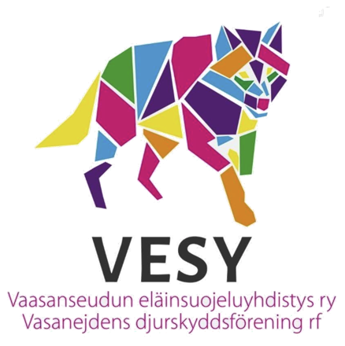
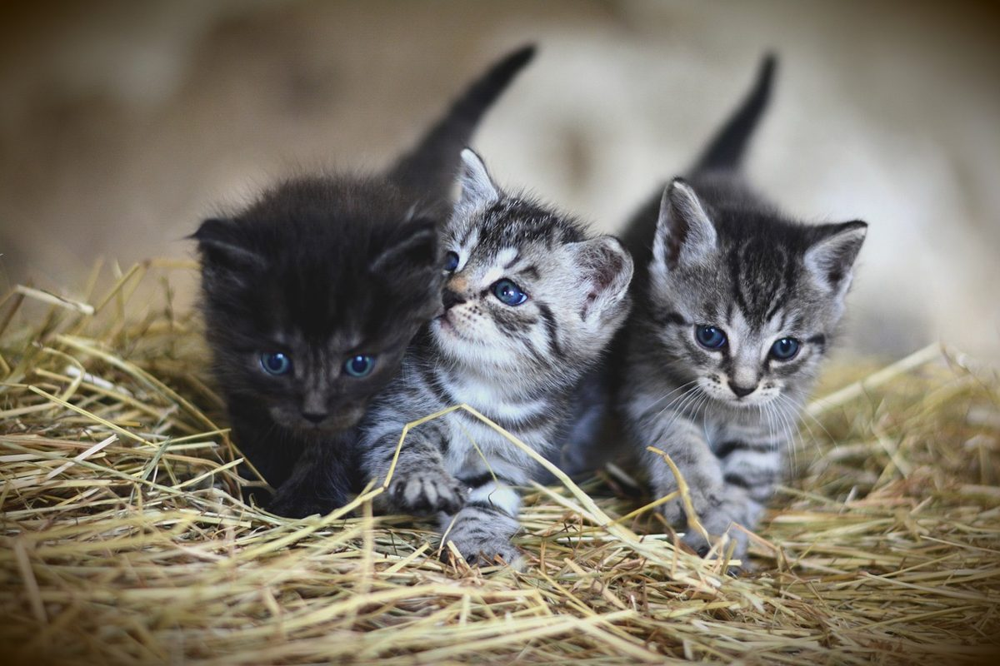

Eläinklinikka Saari on Vaasanseudun eläinsuojeluyhdistyksen (VESY) yhteistyökumppani. Tarjoamme erityishinnat yhdistyksen hoidossa oleville pelastetuille ja sijaiskodeissa asuville eläimille – jotta jokainen apua tarvitseva eläin saa hoidon, jonka se ansaitsee.
Eläinklinikka Saari är samarbetspartner till Vasanejdens djurskyddsförening (VESY). Vi erbjuder specialpriser för räddade djur och djur i jourhem som föreningen tar hand om – så att varje djur i nöd får den vård det förtjänar.
Eläinklinikka Saari is a partner of the Vaasa Region Animal Protection Association (VESY). We offer special prices for the rescued and fostered animals in the association's care – so that every animal in need receives the care it deserves.



Jo vuodesta 1961 VESY on tehnyt työtä Vaasan seudun eläinten hyväksi. Yhdistys toimii täysin vapaaehtoisvoimin ja lahjoitusten varassa.
Työ on käytännönläheistä ja lähellä ihmistä: sijaiskoteja koditta jääneille ja löytöeläimille, loukkaantuneiden luonnonvaraisten eläinten kuljetusta asianmukaiseen hoitoon, neuvontaa sekä apua vähävaraisten omistajien lemmikeille hätätilanteissa.
Ända sedan 1961 har VESY arbetat för djuren i Vasanejden. Föreningen drivs helt av frivilliga och med hjälp av donationer, och är därmed beroende av donationer för sin verksamhet.
Arbetet är konkret och nära människan: jourhem för hemlösa och upphittade djur, transport av skadade vilda djur till lämplig vård, rådgivning samt hjälp till mindre bemedlade ägares husdjur i nödsituationer.
Since 1961, VESY has worked for the animals of the Vaasa region. The association runs entirely on volunteers and donations.
The work is hands-on and close to people: foster homes for stray and homeless animals, transport of injured wildlife to appropriate care, advice, and emergency help for the pets of low-income owners.
Eläinklinikka Saari tukee VESYn työtä tarjoamalla erityishinnat yhdistyksen hoidossa oleville pelastetuille ja sijaiskotieläimille. Näin lahjoitusvarat riittävät pidemmälle ja yhä useampi apua tarvitseva eläin pääsee eläinlääkärin hoitoon – rokotuksiin, mikrosirutukseen, leikkauksiin ja sairaanhoitoon.
Eläinklinikka Saari stöder VESY:s arbete genom att erbjuda specialpriser för räddade djur och jourhemsdjur i föreningens vård. På så sätt räcker donationerna längre, och allt fler djur i nöd kommer till veterinär – för vaccinationer, chipmärkning, operationer och sjukvård.
Eläinklinikka Saari supports VESY's work by offering special prices for the rescued and fostered animals in the association's care. This makes every donated euro go further, so that more animals in need can reach a veterinarian – for vaccinations, microchipping, surgery and medical care.
🐾 Pieni klinikka, iso sydän eläimille 🐾 En liten klinik med ett stort hjärta för djuren 🐾 A small clinic with a big heart for animalsVESY toimii vapaaehtoisten ja tukijoiden varassa. Tässä muutama tapa olla mukana.
VESY är beroende av frivilliga och understödjare. Här är några sätt att vara med.
VESY depends on volunteers and supporters. Here are a few ways to take part.
Anna kodittomalle eläimelle uusi alku. Kodinhakuiset eläimet löytyvät VESYn Facebook-sivulta.
Ge ett hemlöst djur en ny start. Djur som söker hem hittas på VESY:s Facebook-sida.
Give a homeless animal a fresh start. Animals seeking homes are posted on VESY's Facebook page.
Tapahtumat, eläinten kuljetus, löytöeläinten etsintä, valistustyö – jokaiselle löytyy tapa auttaa.
Evenemang, djurtransport, sökande efter försvunna djur, upplysning – det finns en uppgift för alla.
Events, animal transport, searching for lost pets, awareness work – there's a way for everyone to help.
Lahjoitukset kattavat eläinlääkärikuluja, lääkkeitä, sijaiskotihoitoa ja leikkauskampanjoita.
Donationer täcker veterinärkostnader, mediciner, jourhemsvård och kastrationskampanjer.
Donations cover veterinary costs, medicines, foster care and neutering campaigns.
Jäsenenä tuet paikallista eläinsuojelua ja saat SEY:n Eläinten ystävä -lehden.
Som medlem stöder du lokalt djurskydd och får SEY:s tidning Eläinten ystävä.
As a member you support local animal welfare and receive SEY's magazine, "Eläinten ystävä".
Jokainen euro menee suoraan Vaasan seudun eläinten hyväksi. Lahjoittaa voit tilisiirrolla tai MobilePaylla. Yhdistyksellä on Poliisihallituksen myöntämä rahankeräyslupa.
Varje euro går direkt till djuren i Vasanejden. Du kan donera via banköverföring eller MobilePay. Föreningen har ett penninginsamlingstillstånd beviljat av Polisstyrelsen.
Every euro goes directly to the animals of the Vaasa region. You can donate by bank transfer or MobilePay. The association holds a fundraising permit issued by the Finnish Police Board.
Kodinhakuiset eläimet, ajankohtaiset kuulumiset ja yhteydenotot hoituvat parhaiten yhdistyksen omien kanavien kautta.
Djur som söker hem, aktuella nyheter och kontakt sköts bäst via föreningens egna kanaler.
Animals seeking homes, the latest news and enquiries are best handled through the association's own channels.